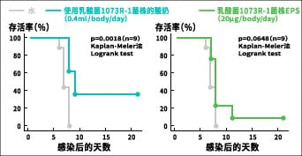
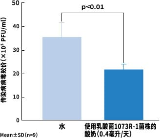

乳酸菌1073R-1株 实验结果(3)
通过小鼠进行的流感病毒感染实验结果表明，
有预防流感的效果。
在与北里大学（山田阳城教授和永井隆之讲师）的共同研究中，进行了让小鼠感染与新型流感同类型的甲型H1N1亚型流感病毒的实验。在使之感染21天前到感染后4天之间，给小鼠喂食由乳酸菌1073R-1株制成的酸奶或由该乳酸菌产生的EPS，与仅喝水的群组作比较观察。
其结果，预先给小鼠喂食该乳酸菌酸奶的群组，能提高流感病毒感染后的生存率。
仅喂水的比较组小鼠在感染后10天内全部死亡，而喂食酸奶的小鼠，在感染后的生存率上升，生存天数也会增加。
通过流冒病毒感染小鼠确认生存率有提高
通过乳酸菌1073R-1株提高生存率，延长生存天数！

关于感染性病毒效价的降低
下列图表是测试流感病毒增殖指标--感染性病毒效价（具有感染力的病毒数量）的实验结果。
通过喂食酸奶（1天0.4毫升）的小鼠和给喂水的小鼠比较感染流感病毒4天后肺里的感染性病毒效价。其结果，喂食酸奶的小鼠与喂水的小鼠相比，病毒效价明显下降。即使赋予EPS，也得到了与酸奶相同的结果。
另外，感染病毒后，还测试了小鼠的脾脏细胞（免疫细胞的集合）的NK活性，当赋予酸奶或EPS后，活性就会提高。
|  |
 |
实验结果
确认由乳酸菌1073R-1株制成的酸奶或EPS，都能激活宿主的自然免疫（NK细胞），发现抗流感病毒的活性！
|